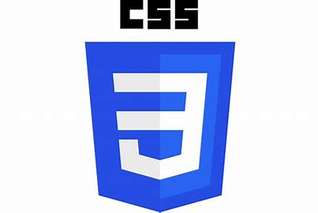
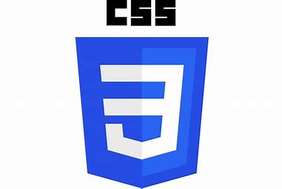
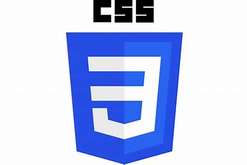

My name is Alabi Sunday, and I am an aspiring and intermediate frontend developer and a Computer Science graduate. From a young age, I’ve always been fascinated by technology and how it shapes our world. This curiosity eventually led me to discover the world of web development, particularly frontend development, which combines my love for creativity with my technical skills.
As a frontend web developer, I am passionate about creating visually appealing and user-friendly interfaces.I enjoy working with HTML, CSS, and JavaScript, and I am constantly exploring new frameworks and libraries, such as React. The ability to transform ideas into interactive web applications excites me, and I thrive on the challenge of problem-solving that comes with coding.
I just started a scholarship frontend web development program with NerdzFactory, The Tech Bridge Program under the IDEAS Project. I am so happy to learn, grow and improve my tech skills.

My This is the Bonnie lies over the ocean.
My Bonnie lies over the sea.
My Bonnie lies over the ocean.
Oh, bring back my Bonnie to me.
nerdzfactory